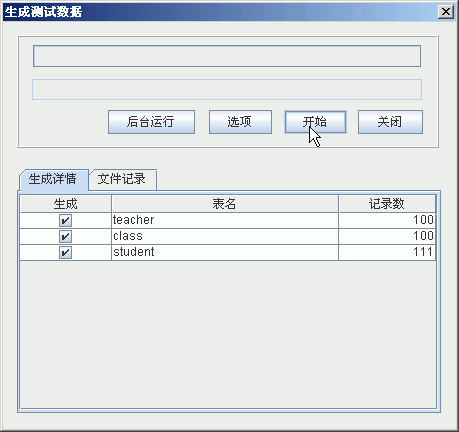
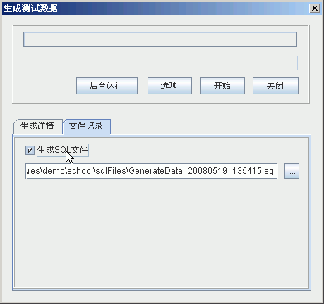
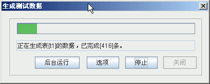

- 在主界面点击菜单 规则->生成测试数据(工点击工具栏按钮),出现生成数据的对话框,如下:

- 后台运行，可以隐藏该对话框，继续别的操作。
- 选项，隐藏(或显示)下面的生成选项页。选项页的第一页是显示哪些表需要生成数据，生成多少条。默认所有已经配置了的表都会生成。如果希望某个表不生成，去掉前面的钩就行了。选项页的第二页，生成数据时是否需要同时以文件方式记录。默认值是根据首选项里面配置决定的。

- 开始，点击该按钮，就开始生成测试数据。如下图:

你可以看到，点击开始后开始按钮变成停止按钮了。进度条显示了数据生成情况。